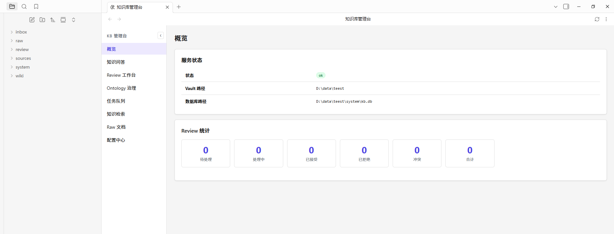

INPUT / 01
内容入口分散
痛点：网页、Markdown、微信文章、飞书文档、本地文件散落在不同路径，后续很难统一处理。
Knowledge Base Copilot v2.1.3 将 Obsidian 插件、本地 FastAPI 服务、React 管理台、Raw/Wiki 编译、混合检索和 WorkBuddy MCP 组合成一套可追溯的知识工作流。资料留在你的 Vault，答案回到原始证据。

传统知识库很容易变成“收藏夹”。Knowledge Base Copilot 让网页、文档、微信文章、飞书资料、Office 文件和 Vault 笔记进入可搜索、可治理、可问答的统一知识平面。
痛点：网页、Markdown、微信文章、飞书文档、本地文件散落在不同路径，后续很难统一处理。
痛点：资料越来越多后，标题和标签无法覆盖真实问题，语义召回、证据引用和多轮追问变成刚需。
痛点：复杂 PDF、超长文本和表格文件可能“转换成功但无法抽取”。系统必须保留 Raw、质量和失败原因，而不是静默丢失。
三个边界各司其职：Obsidian 管理知识资产，KB Service 负责可复现的解析与证据，WorkBuddy/Codex 负责编排会话和深度检索。
能力按真实工作流组织：先把资料带进来，再把结构和来源保留下来，最后让检索和 Agent 在边界内工作。
支持 URL、本地文件、微信文章、批量文件、飞书/Lark 和不可解析文件路径登记，进入同一套任务队列和状态模型。
Docling → MinerU → MarkItDown 按可用性和回退策略处理 PDF，保存解析产物与质量元数据。文字层清晰的 PDF 效果最佳，扫描件仍需 OCR。
DOCX 解析标题层级、段落、列表、表格、页眉页脚和图片元数据。XLSX/XLSB 解析工作表、表头、单元格范围、公式、合并区域、链接和批注。PPTX 解析幻灯片、文本块、表格、备注和 Shape 位置。DOC、XLS、PPT 先由 LibreOffice 转换为对应的现代格式，再进入同一套解析流程。解析结果写入统一的 Office 中间格式，并记录来源位置和质量等级。OfficeCompiler 根据中间格式生成文档概览、章节、工作表、Row Group、幻灯片主题和领域实体 Wiki，检索引用可定位到章节、表格、单元格范围或幻灯片。MarkItDown 生成便于阅读的 Markdown；原生结构解析失败时，它提取可用文本供后续编译。
按标题和父标题保留上下文，按段落/句子切分，表格按完整行、代码块保持围栏，并在有限并发下合并跨窗口实体；窗口服务于 Wiki 抽取，不是永久碎片化的 RAG chunk。
Raw 保存原文、来源 URI、解析器、质量和附件；Wiki 保存结构化实体、概念、决策和关系。导入与编译状态分离，失败时仍可回到原始材料。
BM25、可选本地向量和 Reranker 组合候选；编译后只更新受影响 Wiki 页面，不因每次导入都重建全库 embedding。
支持项目、版本、产品等范围约束，以及事实、关系、审核状态、评测候选和证据充分性，避免跨项目串答案。
通过本地 MCP Streamable HTTP 暴露受控工具。Agent 管会话和推理，KB Copilot 管检索、证据、导入、审计和授权。
本地 FastAPI 服务承载存储、解析、索引和编排；API Key、Provider、解析器和 MCP 入口通过 Vault 运行配置管理。
LLM Wiki 不是把文件直接丢给模型，而是一条可回溯的资料生命周期。大文本和复杂文件首先进入 Raw，编译结果再进入 Wiki 和检索索引。
网页、文件、微信、飞书和批量路径进入任务队列
选择解析器并记录 parser、质量、产物和回退原因
写入 Raw、附件、来源 URI、版本和 frontmatter
语义窗口抽取实体、概念、事实和关系
受影响页面增量更新 BM25、向量和 generation
返回引用、Scope、证据充分性和未解决缺口
窗口保留标题路径；普通文本优先按段落和句子切分；表格按完整行切分；代码块保持围栏；同一实体在多个窗口出现时合并摘要、别名和事实。overlap 只能缓解边界，不能替代来源核验。
例如大型 XLSX 可以成功转换为 Markdown，但如果输出是扁平表格且没有适合当前 Schema 的实体，Wiki 可能为 0。此时 Raw、source_uri、解析质量和失败原因仍应保留，系统不能把它伪装成完整知识编译。
产品页中的“知识库”不是一个扁平文件夹，而是四类可以互相追溯的对象。这样导入失败、编译为空或答案需要复核时，都能回到确定的上游材料。
记录本地文件、URL、微信文章或飞书文档的来源 URI、文件指纹、导入时间和版本。选择另存时，原件进入与 Raw 同层级的 sources/local... 目录。
保存 MarkItDown、Docling 或 MinerU 生成的 Markdown、解析器、质量分数、回退原因和原始附件。解析成功不等于已经形成 Wiki。
由语义窗口和 WikiCompiler 提取概念、版本、事实、决策、关系和审核状态。页面可以独立增量编译和索引，不必每次重建全库。
答案引用绑定到 Raw/Wiki 的路径、段落和 Scope。证据不足时返回缺口，避免把模型推测伪装成资料中的事实。
DOC/DOCX、XLS/XLSX/XLSB、PPT/PPTX 进入统一处理链路。系统保留原件与转换关系，生成可读 Markdown 和 Office 中间格式，再由 OfficeCompiler、领域 Profile 和证据索引生成可检索、可定位的知识页面。
DOCX 使用文档结构解析，XLSX/XLSB 保留 Workbook、Sheet、表头、单元格范围、公式和合并区域，PPTX 保留幻灯片、文本块、表格和备注。旧版 DOC/XLS/PPT 先经兼容转换并保留原件关系。
Workbook、Sheet、Table、Section 和 Slide 先生成稳定概览，再按 interface_catalog、configuration_catalog、data_dictionary 等 Profile 抽取字段、实体、事实和关系，不把整张表粗暴交给通用 LLM。
结构索引、语义索引和 Raw fallback 同时工作。答案可以引用到 Excel 的 Sheet/Range、Word 的标题/表格、PowerPoint 的幻灯片，并由 WorkBuddy/Codex 进行多轮检索和证据核验。
WorkBuddy 是会话和 Agent 编排入口；KB Copilot 通过版本化 MCP 契约提供受控检索、证据读取、导入和审计。没有 WorkBuddy 时，Obsidian 原有导入、编译、搜索和 QA 仍然可用。
调用方不直接读取 Vault，也不能绕过 Scope 获取完整路径和原文。MCP 返回短期证据 ID、摘要、引用和授权范围。
endpoint: http://127.0.0.1:7420/mcp transport: Streamable HTTP contract: kb_mcp_v1 clients: WorkBuddy / Codex
普通用户从发布包开始，不需要运行源码开发服务。安装器负责检查环境、初始化 Vault、安装服务和复制插件；运行端口默认是本地 `7420`。
# 下载 Obsidian 桌面端 https://obsidian.md # 下载最新 Knowledge Base Copilot 发布包 https://atomgit.com/whw174660897/ObsidianKnowgrah_releases # 解压后应看到 kb-copilot-v2.1.3.zip install.ps1 install.sh kb-service/ obsidian-plugin/
# Windows Set-ExecutionPolicy -ExecutionPolicy RemoteSigned -Scope CurrentUser .\install.ps1 -VaultPath "D:\data\ObsidianVault" # macOS / Linux bash install.sh
# 配置文件由安装器写入，Provider/API Key 不写死在源码 {vault}/system/config.yaml host: 127.0.0.1 port: 7420 default_compile_provider: compile_relay default_qa_provider: qa_relay qa_timeout: 600 # 然后在 Obsidian 设置中启用插件并测试连接
# 服务健康检查 curl http://127.0.0.1:7420/api/health # 解析器能力检查 curl http://127.0.0.1:7420/api/diagnostics/parsers # 正式服务日志 {vault}/system/kb-service.log
server: kb-copilot type: http url: http://127.0.0.1:7420/mcp contract_version: kb_mcp_v1 # 使用安装器生成的独立 Token，不复用其他客户端凭据
# 仅影响飞书/Lark 批量导入，不影响基础导入、搜索和问答
npm install -g @larksuite/cli
lark-cli auth status把产品边界说清楚，比把所有规划能力都写成“已支持”更专业。
本地 FastAPI 服务、Obsidian 插件、React 管理台；URL/文件/批量导入；PDF 解析回退链；大文本语义窗口；Raw/Wiki 编译；BM25、可选向量和 Reranker；Scope、引用、审计；WorkBuddy/Codex MCP。
Page/Block/BBox 中间格式、稳定的 Section 页码证据、持久化章节向量和扫描 PDF OCR 质量闭环。
文件转换成功只代表 Raw 已生成。Wiki 还需要满足结构化抽取条件。大型表格、复杂 Office 或质量不足的解析结果可能得到 0 页；系统应保留 Raw、source_uri、解析器和诊断信息，而不是把它当作完整知识编译。
不是。WorkBuddy/Codex 是可选 Agent 入口。未配置 MCP 时，Obsidian 的导入、编译、索引、搜索和 QA 仍然可以使用。
不保证。文字层清晰的 PDF 效果最好；复杂表格、多栏、扫描件和图片型 PDF 依赖高级解析器或 OCR。系统会记录质量和回退路径，不伪造页码或结构。
DOC/DOCX、XLS/XLSX/XLSB、PPT/PPTX 先经过原生结构解析或旧版格式兼容转换，生成 Office 中间格式；OfficeCompiler 再按文档段落、工作表行组、幻灯片和领域 Profile 生成 Wiki 页面。MarkItDown 只承担可读 Markdown 产物和解析失败时的回退。结构定位、质量等级和诊断信息随证据进入检索与问答链路。
默认以本地 Vault 和本地服务为边界。是否调用远程 LLM、Reranker 或第三方解析服务由运行配置决定；API Key 不写死在源码，Scope 和证据由服务端控制。
先查看 Obsidian 内任务状态，再检查 `/api/health`、`/api/doctor`、`/api/diagnostics/parsers` 和 `{vault}/system/kb-service.log`。编译失败应区分 Raw 导入、Wiki 抽取、索引和增强阶段。
从文件，到结构，再到可信回答。Knowledge Base Copilot v2.1.3 把 Obsidian 的可编辑性、知识工程的结构化和 Agent 的推理能力连接到同一套证据链上。